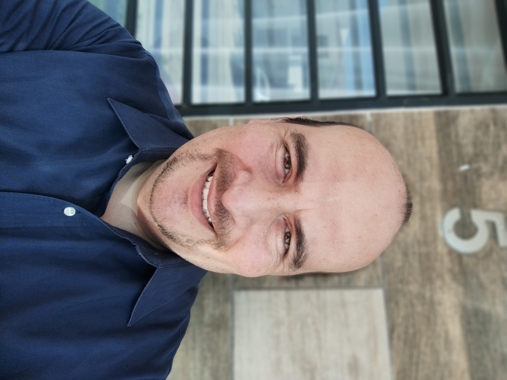

Jose Ricardo Cabrera Orozco
Computer Sciences Engineer

Summary
I'm a professional Test Development Engineer that have 19 years of experience on the automotive field. I'm so excited to
work besides as a Web Developer. Develop code is one of the things I enjoy in the life. Create value for your company will
be my pleasure. My passion is to apply software code to the Electronic industry.
Education
Computer Sciences Engineering
School: Instituto Tecnológico de Tlajomulco (2013-2018)
Electronic and Communications Technologist
School: Centro de Enseñanza Técnica Industrial (1998-2003)
Work Experience
Sr EOL Engineer at Capgemini (Nov 2024 - Present)
- Provide support to production and new introduction projects at Stellantis Truck plant in Saltillo.
- I program ECU's and diagnose failures when they appear in the production line of trucks.
Sr Staff Test Development Engineer at Continental Automotive (June 2018 - Aug 2024)
- Develop test sequences in NI Test Stand and code in NI LabView to execute this test sequence on the validation machines
during development phase of new projects.
- Design the schematic diagram to build the test boxes and harnesses used to assemble the test machines.
- Create a BOM and quote materials for the assemble of the test boxes while we have a budget control.
Sr Development Product Engineer at Continental Automotive (May 2008 - June 2018)
- Assure the quality of product by setting functional and electrical test on test machines through the production line.
- Implement engineering changes on the production floor on test machines.
- Quote and provide test equipment for diagnostic test stations.
- Train resident engineers and diagnostic technicians.
- Improvde test cycle times.
Skills
- PCB schematic
- Failure analysis
- Vector CANoe
- HTML
- CSS
- Test Coverage Analysis
- Test Equipment Design
- NI Test Stand
- NI LabView
- DMM, oscilloscope and Signal generator handle
- Python (Basic)
- C# (Basic)
- Keysight Test Exec